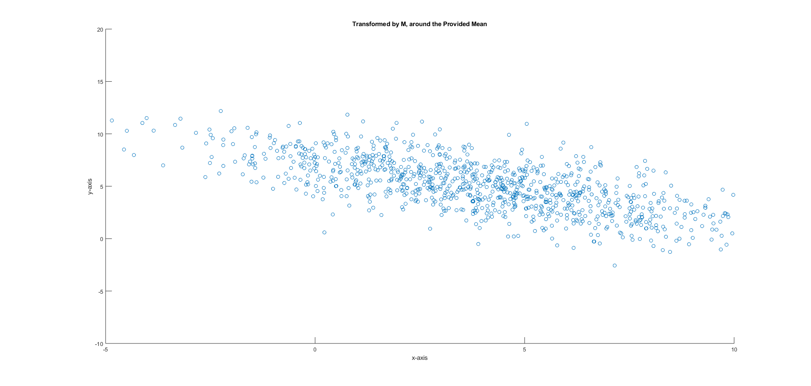
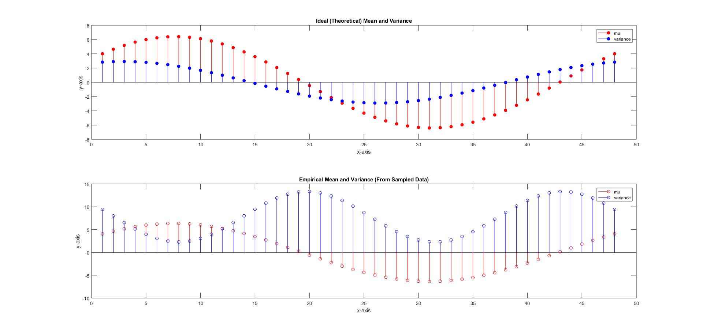
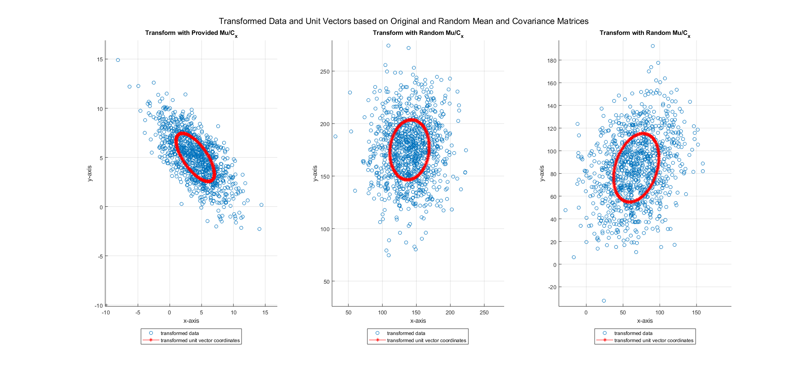
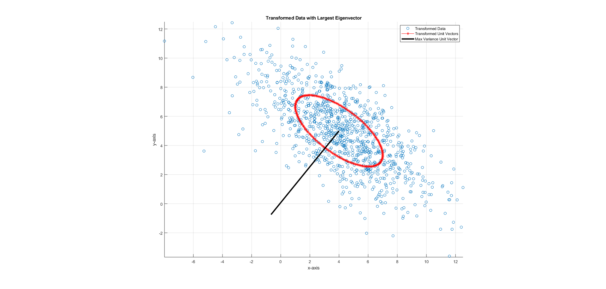

Contents
HW # 4 - Question 3 - Math Tools - Matthew DeVerna
clear all close all
Question 3: Multi-Dimensional Gaussians
Write a function samples = ndRand(mean, cov, num) that generates a set of samples drawn from an N-dimensional Gaussian distribution with the specified parameters: 'mean' = N-vector 'cov'ariance = NxN matrix 'num' = [optional -> default = 1] specifies # of samples to return
% The returned value should be a matrix with 'num' rows each containing a % sample of N elements. % Use the below parameters to sample and scatter plot 1,000 points to % verify your function works as intended. mu = [4,5] ; C_x = [9,-5; -5,6] ; num = 1000 ; % Run function samples = ndRand(mu, C_x, num) ; % Here is a visual check that the data has been trasnformed figure ; scatter(samples(:,1),samples(:,2)) xlabel('x-axis') ylabel('y-axis') title('Transformed by M, around the Provided Mean') axis([-5, 10, -10, 20]) % Here is a quantitative check... CovarianceMat = cov(samples) CovarianceMat = round(CovarianceMat); CovarianceMatCheck = isequal(CovarianceMat,C_x) % As we can see here the the CovarianceMat is approximately equal to the % C_x covariance matrix that we provided it before so we can conclude that % our function is working.
CovarianceMat =
9.5552 -5.5146
-5.5146 6.5372
CovarianceMatCheck =
logical
0
 (B) Projecting a 2-D Gaussian Onto a Unit Vector
Consider the marginal distribution of a generalized 2-D Gaussian with mean 'mu' and covariance 'sigma' in which samples are projected onto a unit vector 'u_hat' to obtain a 1-D distribution.
% Write a mathematical expression for the mean, 'mu_hat', and variance, % 'var_sqrd', of this marginal distribution as a function of 'mu_hat'. % Set these again just in case mu = [4,5] ; C_x = [9,-5; -5,6] ; num = 1000 ; % Take new Samples new_samples = ndRand(mu, C_x, num) ; u = [1;1] ; % Create a vector u_hat = u/sqrt(u'*u) ; % Make it a unit vector by dividing by it's length ideal_mu_hat = u_hat' * mu' ; % mathematical mean var_sqd = u_hat' * C_x * u_hat ; % mathetmatical variance % Create a set of 48 unit vectors spaced evenly around the unit circle. For % each of these, compare the mean and variance estimated by projecting your % 1,000 samples from part (a) onto 'u-hat'. % create unit vectors in a circle n = 0:47; thetas_ = (2*pi) * n ; thetas = thetas_ / 47 ; unit_vecs = [cos(thetas) ; sin(thetas)] ; % preallocate vectors to fill w. data in below loop ideal_mus = nan(1, length(n)) ; ideal_vars = nan(1, length(n)) ; emp_mean = nan(1, length(n)) ; emp_var = nan(1, length(n)) ; idealVsEmpDiff_MU = nan(1, length(n)) ; idealVsEmpDiff_VAR = nan(1, length(n)) ; for ii = 1: length(n) % Find the ideal/theoretical for all, appending to the new spot each % time. Do this by dotting with ideal mu and C_x ideal_mus(ii) = unit_vecs(:,ii)' * mu' ; ideal_vars(ii) = unit_vecs(:,ii)' * C_x * u_hat ; % Do the same thing for the data that we "smash" onto each new unit % vector as we iterate through smashedData = new_samples*unit_vecs(:,ii) ; emp_mean(ii) = mean(smashedData) ; emp_var(ii) = cov(smashedData) ; % Find their difference idealVsEmpDiff_MU(ii) = ideal_mus(ii) - emp_mean(ii) ; idealVsEmpDiff_VAR(ii) = ideal_vars(ii) - emp_var(ii) ; end % Stem plot the mathematically computed mean and the sample mean (on the % same plot) and also plot the mathematical variance and the sample % variance. subplot(2,1,1) stem(ideal_mus, 'filled', 'r') hold on stem(ideal_vars, 'filled', 'b') title('Ideal (Theoretical) Mean and Variance') legend('mu','variance') xlabel('x-axis') ylabel('y-axis') subplot(2,1,2) stem(emp_mean, '-r') hold on stem(emp_var, '-b') title('Empirical Mean and Variance (From Sampled Data)') legend('mu','variance') xlabel('x-axis') ylabel('y-axis') % Here we see that the mean and variance fluctuates in a cyclical manner as % we move around the circle. Should vary similarly to one another, however, % they will never be identical (unless you take 'tons and tons' of samples).
(C) Plotting an Ellipse
Scatterplot 1,000 new samples of a 2-dimensional Gaussian using 'mu' and C_x from part (A). Measure the sample mean and covariance of your data points, comparing to the values that you requested when calling the function.
% Set these again just in case mu = [4,5] ; C_x = [9,-5; -5,6] ; num = 1000 ; % ReRun function to create new samples samples2 = ndRand(mu, C_x, num) ; % Plot an ellipse on top of the scatterplot by generating unit vectors % equi-spaced around the circle, and transforming them with a matrix as in % part (A) to have the same mean and covariance as the data. Try this on % three additional random data sets with different means and covariance % matrices. Does this ellipse capture the shape of the data? % Create the set of unit vectors n = 0:199; thetas_ = (2*pi) * n ; thetas = thetas_ / 199 ; unit_vecs = [cos(thetas) ; sin(thetas)] ; figure; hold on; for ii = 1:3 if ii == 1 % Re-run the function to get another transformed 1,000 samples samples2 = ndRand(mu, C_x, num) ; % Transform the unit vectors trans_unit_vecs = ndRandwData(unit_vecs, mu, C_x) ; % Plot the transformed samples and the unit vectors subplot(1,3,ii) scatter(samples2(:,1),samples2(:,2)) hold on plot(trans_unit_vecs(:,1), trans_unit_vecs(:,2), 'r-*') maxmax = max(max(samples2)); minmin = min(min(samples2)); axis([minmin-2 maxmax+2, minmin-2 maxmax+2]) grid on title('Transform with Provided Mu/C_x') legend('transformed data','transformed unit vector coordinates', 'Location', 'southoutside') xlabel('x-axis') ylabel('y-axis') else random_mu = mu * randi([-50,50]); rand_mat = randi([-50,50],25,2); random_cov = cov(rand_mat) ; random_cov(2,1) = random_cov(1,2); % Re-run the function to get another transformed 1,000 samples samples2 = ndRand(random_mu, random_cov, num) ; % Transform the unit vectors trans_unit_vecs = ndRandwData(unit_vecs, random_mu, random_cov) ; % Plot the transformed samples and the unit vectors subplot(1,3,ii) scatter(samples2(:,1),samples2(:,2)) hold on plot(trans_unit_vecs(:,1), trans_unit_vecs(:,2), 'r-*') maxmax = max(max(samples2)); minmin = min(min(samples2)); axis([minmin-5 maxmax+5, minmin-5 maxmax+5]) grid on title('Transform with Random Mu/C_x') legend('transformed data','transformed unit vector coordinates', 'Location', 'southoutside') xlabel('x-axis') ylabel('y-axis') end end sgtitle('Transformed Data and Unit Vectors based on Original and Random Mean and Covariance Matrices') % Yes the ellipse does capture the shape of these matrices, because % we implementing the same transformation to every unit vector. These % transformations are linear, so because we are essentially "giving" the % set of unit vectors the same covariance and mean, then it should surround % the data that was transformed by the same parameters (mean and % covariance).
(D) Maximizing the variance of the marginal distribution
How would you, mathematically, compute the direction (i.e. find a unit vector) that maximizes the variance of the marginal distribution? Compute this direction and verify that it is consistent with your plot (i.e. plot this unit vector ontop of your previous plot.
% *** Project onto a unit vector that is parallel to the best fitting line % of regression. % Reset the original dataset mu = [4,5] ; C_x = [9,-5; -5,6] ; num = 1000 ; % ReRun function to create new samples samples2 = ndRand(mu, C_x, num) ; % To maximize the variance we need to find the largest eigenvector, so we % take the svd() [U, S, V] = svd(samples2); % By default, matlab sorts these from largest to smallest, so we take the % first column max_variance_unit = V(:,1) ; % Transform the unit vectors trans_unit_vecs = ndRandwData(unit_vecs, mu, C_x) ; % Take all the means of the transformed data, this is where we'll be % plotting our eigenvector from. data_means = mean(trans_unit_vecs) ; % Plot the transformed samples and the unit vectors figure scatter(samples2(:,1),samples2(:,2)) hold on plot(trans_unit_vecs(:,1), trans_unit_vecs(:,2), 'r-*') plot([data_means(1),max_variance_unit(1)], [data_means(2),max_variance_unit(2)], 'LineWidth', 3, 'Color', 'k') maxmax = max(max(samples2)); minmin = min(min(samples2)); axis equal grid on title('Transformed Data with Largest Eigenvector') legend('Transformed Data','Transformed Unit Vectors','Max Variance Unit Vector') xlabel('x-axis') ylabel('y-axis') % The unit vector should run perpendicular to the line of best fit, which % we can sort of visually see from the plot. However, what we do know is % that the first column of V (from the svd) is the basis for the largest % variance of this data set. Therefore, we can be confident that this line % would maximize the variance of this data.